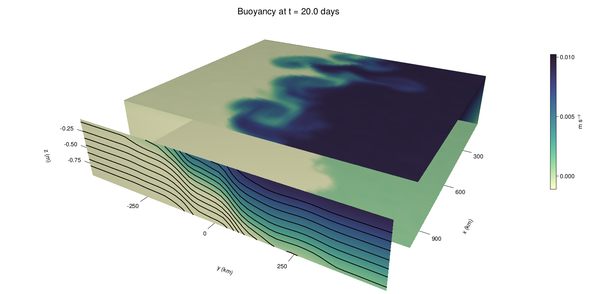

Baroclinic adjustment
In this example, we simulate the evolution and equilibration of a baroclinically unstable front.
Install dependencies
First let's make sure we have all required packages installed.
using Pkg
pkg"add Oceananigans, CairoMakie"using Oceananigans
using Oceananigans.UnitsGrid
We use a three-dimensional channel that is periodic in the x direction:
Lx = 1000kilometers # east-west extent [m]
Ly = 1000kilometers # north-south extent [m]
Lz = 1kilometers # depth [m]
grid = RectilinearGrid(size = (48, 48, 8),
x = (0, Lx),
y = (-Ly/2, Ly/2),
z = (-Lz, 0),
topology = (Periodic, Bounded, Bounded))48×48×8 RectilinearGrid{Float64, Periodic, Bounded, Bounded} on CPU with 3×3×3 halo
├── Periodic x ∈ [0.0, 1.0e6) regularly spaced with Δx=20833.3
├── Bounded y ∈ [-500000.0, 500000.0] regularly spaced with Δy=20833.3
└── Bounded z ∈ [-1000.0, 0.0] regularly spaced with Δz=125.0Model
We built a HydrostaticFreeSurfaceModel with an ImplicitFreeSurface solver. Regarding Coriolis, we use a beta-plane centered at 45° South.
model = HydrostaticFreeSurfaceModel(; grid,
coriolis = BetaPlane(latitude = -45),
buoyancy = BuoyancyTracer(),
tracers = :b,
momentum_advection = WENO(),
tracer_advection = WENO())HydrostaticFreeSurfaceModel{CPU, RectilinearGrid}(time = 0 seconds, iteration = 0)
├── grid: 48×48×8 RectilinearGrid{Float64, Periodic, Bounded, Bounded} on CPU with 3×3×3 halo
├── timestepper: QuasiAdamsBashforth2TimeStepper
├── tracers: b
├── closure: Nothing
├── buoyancy: BuoyancyTracer with ĝ = NegativeZDirection()
├── free surface: ImplicitFreeSurface with gravitational acceleration 9.80665 m s⁻²
│ └── solver: FFTImplicitFreeSurfaceSolver
└── coriolis: BetaPlane{Float64}We start our simulation from rest with a baroclinically unstable buoyancy distribution. We use ramp(y, Δy), defined below, to specify a front with width Δy and horizontal buoyancy gradient M². We impose the front on top of a vertical buoyancy gradient N² and a bit of noise.
"""
ramp(y, Δy)
Linear ramp from 0 to 1 between -Δy/2 and +Δy/2.
For example:
```
y < -Δy/2 => ramp = 0
-Δy/2 < y < -Δy/2 => ramp = y / Δy
y > Δy/2 => ramp = 1
```
"""
ramp(y, Δy) = min(max(0, y/Δy + 1/2), 1)
N² = 1e-5 # [s⁻²] buoyancy frequency / stratification
M² = 1e-7 # [s⁻²] horizontal buoyancy gradient
Δy = 100kilometers # width of the region of the front
Δb = Δy * M² # buoyancy jump associated with the front
ϵb = 1e-2 * Δb # noise amplitude
bᵢ(x, y, z) = N² * z + Δb * ramp(y, Δy) + ϵb * randn()
set!(model, b=bᵢ)Let's visualize the initial buoyancy distribution.
using CairoMakie
# Build coordinates with units of kilometers
x, y, z = 1e-3 .* nodes(grid, (Center(), Center(), Center()))
b = model.tracers.b
fig, ax, hm = heatmap(y, z, interior(b)[1, :, :],
colormap=:deep,
axis = (xlabel = "y [km]",
ylabel = "z [km]",
title = "b(x=0, y, z, t=0)",
titlesize = 24))
Colorbar(fig[1, 2], hm, label = "[m s⁻²]")
current_figure() # hide
fig
Simulation
Now let's build a Simulation.
simulation = Simulation(model, Δt=20minutes, stop_time=20days)Simulation of HydrostaticFreeSurfaceModel{CPU, RectilinearGrid}(time = 0 seconds, iteration = 0)
├── Next time step: 20 minutes
├── Elapsed wall time: 0 seconds
├── Wall time per iteration: NaN days
├── Stop time: 20 days
├── Stop iteration : Inf
├── Wall time limit: Inf
├── Callbacks: OrderedDict with 4 entries:
│ ├── stop_time_exceeded => Callback of stop_time_exceeded on IterationInterval(1)
│ ├── stop_iteration_exceeded => Callback of stop_iteration_exceeded on IterationInterval(1)
│ ├── wall_time_limit_exceeded => Callback of wall_time_limit_exceeded on IterationInterval(1)
│ └── nan_checker => Callback of NaNChecker for u on IterationInterval(100)
├── Output writers: OrderedDict with no entries
└── Diagnostics: OrderedDict with no entriesWe add a TimeStepWizard callback to adapt the simulation's time-step,
wizard = TimeStepWizard(cfl=0.2, max_change=1.1, max_Δt=20minutes)
simulation.callbacks[:wizard] = Callback(wizard, IterationInterval(20))Callback of TimeStepWizard(cfl=0.2, max_Δt=1200.0, min_Δt=0.0) on IterationInterval(20)Also, we add a callback to print a message about how the simulation is going,
using Printf
wall_clock = Ref(time_ns())
function print_progress(sim)
u, v, w = model.velocities
progress = 100 * (time(sim) / sim.stop_time)
elapsed = (time_ns() - wall_clock[]) / 1e9
@printf("[%05.2f%%] i: %d, t: %s, wall time: %s, max(u): (%6.3e, %6.3e, %6.3e) m/s, next Δt: %s\n",
progress, iteration(sim), prettytime(sim), prettytime(elapsed),
maximum(abs, u), maximum(abs, v), maximum(abs, w), prettytime(sim.Δt))
wall_clock[] = time_ns()
return nothing
end
simulation.callbacks[:print_progress] = Callback(print_progress, IterationInterval(100))Callback of print_progress on IterationInterval(100)Diagnostics/Output
Here, we save the buoyancy, $b$, at the edges of our domain as well as the zonal ($x$) average of buoyancy.
u, v, w = model.velocities
ζ = ∂x(v) - ∂y(u)
B = Average(b, dims=1)
U = Average(u, dims=1)
V = Average(v, dims=1)
filename = "baroclinic_adjustment"
save_fields_interval = 0.5day
slicers = (east = (grid.Nx, :, :),
north = (:, grid.Ny, :),
bottom = (:, :, 1),
top = (:, :, grid.Nz))
for side in keys(slicers)
indices = slicers[side]
simulation.output_writers[side] = JLD2OutputWriter(model, (; b, ζ);
filename = filename * "_$(side)_slice",
schedule = TimeInterval(save_fields_interval),
overwrite_existing = true,
indices)
end
simulation.output_writers[:zonal] = JLD2OutputWriter(model, (; b=B, u=U, v=V);
filename = filename * "_zonal_average",
schedule = TimeInterval(save_fields_interval),
overwrite_existing = true)JLD2OutputWriter scheduled on TimeInterval(12 hours):
├── filepath: ./baroclinic_adjustment_zonal_average.jld2
├── 3 outputs: (b, u, v)
├── array type: Array{Float64}
├── including: [:grid, :coriolis, :buoyancy, :closure]
└── max filesize: Inf YiBNow we're ready to run.
@info "Running the simulation..."
run!(simulation)
@info "Simulation completed in " * prettytime(simulation.run_wall_time)[ Info: Running the simulation...
[ Info: Initializing simulation...
[00.00%] i: 0, t: 0 seconds, wall time: 24.846 seconds, max(u): (0.000e+00, 0.000e+00, 0.000e+00) m/s, next Δt: 20 minutes
[ Info: ... simulation initialization complete (21.486 seconds)
[ Info: Executing initial time step...
[ Info: ... initial time step complete (25.752 seconds).
[06.94%] i: 100, t: 1.389 days, wall time: 1.032 minutes, max(u): (1.277e-01, 1.193e-01, 1.567e-03) m/s, next Δt: 20 minutes
[13.89%] i: 200, t: 2.778 days, wall time: 15.898 seconds, max(u): (2.244e-01, 1.816e-01, 1.796e-03) m/s, next Δt: 20 minutes
[20.83%] i: 300, t: 4.167 days, wall time: 15.900 seconds, max(u): (3.040e-01, 2.471e-01, 1.778e-03) m/s, next Δt: 20 minutes
[27.78%] i: 400, t: 5.556 days, wall time: 15.971 seconds, max(u): (3.777e-01, 4.342e-01, 2.221e-03) m/s, next Δt: 20 minutes
[34.72%] i: 500, t: 6.944 days, wall time: 16.078 seconds, max(u): (5.141e-01, 6.611e-01, 2.450e-03) m/s, next Δt: 20 minutes
[41.67%] i: 600, t: 8.333 days, wall time: 16.218 seconds, max(u): (6.993e-01, 9.292e-01, 3.074e-03) m/s, next Δt: 20 minutes
[48.61%] i: 700, t: 9.722 days, wall time: 16.193 seconds, max(u): (1.094e+00, 1.177e+00, 4.247e-03) m/s, next Δt: 20 minutes
[55.56%] i: 800, t: 11.111 days, wall time: 16.207 seconds, max(u): (1.355e+00, 1.205e+00, 4.631e-03) m/s, next Δt: 20 minutes
[62.50%] i: 900, t: 12.500 days, wall time: 16.193 seconds, max(u): (1.277e+00, 1.333e+00, 3.815e-03) m/s, next Δt: 20 minutes
[69.44%] i: 1000, t: 13.889 days, wall time: 16.221 seconds, max(u): (1.462e+00, 1.306e+00, 5.455e-03) m/s, next Δt: 20 minutes
[76.39%] i: 1100, t: 15.278 days, wall time: 16.153 seconds, max(u): (1.416e+00, 1.376e+00, 3.422e-03) m/s, next Δt: 20 minutes
[83.33%] i: 1200, t: 16.667 days, wall time: 16.224 seconds, max(u): (1.298e+00, 1.292e+00, 2.835e-03) m/s, next Δt: 20 minutes
[90.28%] i: 1300, t: 18.056 days, wall time: 16.116 seconds, max(u): (1.347e+00, 1.323e+00, 3.259e-03) m/s, next Δt: 20 minutes
[97.22%] i: 1400, t: 19.444 days, wall time: 16.085 seconds, max(u): (1.526e+00, 1.347e+00, 3.736e-03) m/s, next Δt: 20 minutes
[ Info: Simulation is stopping after running for 4.781 minutes.
[ Info: Simulation time 20 days equals or exceeds stop time 20 days.
[ Info: Simulation completed in 4.786 minutes
Visualization
All that's left is to make a pretty movie. Actually, we make two visualizations here. First, we illustrate how to make a 3D visualization with Makie's Axis3 and Makie.surface. Then we make a movie in 2D. We use CairoMakie in this example, but note that using GLMakie is more convenient on a system with OpenGL, as figures will be displayed on the screen.
using CairoMakieThree-dimensional visualization
We load the saved buoyancy output on the top, bottom, north, and east surface as FieldTimeSerieses.
filename = "baroclinic_adjustment"
sides = keys(slicers)
slice_filenames = NamedTuple(side => filename * "_$(side)_slice.jld2" for side in sides)
b_timeserieses = (east = FieldTimeSeries(slice_filenames.east, "b"),
north = FieldTimeSeries(slice_filenames.north, "b"),
bottom = FieldTimeSeries(slice_filenames.bottom, "b"),
top = FieldTimeSeries(slice_filenames.top, "b"))
B_timeseries = FieldTimeSeries(filename * "_zonal_average.jld2", "b")
times = B_timeseries.times
grid = B_timeseries.grid48×48×8 RectilinearGrid{Float64, Periodic, Bounded, Bounded} on CPU with 3×3×3 halo
├── Periodic x ∈ [0.0, 1.0e6) regularly spaced with Δx=20833.3
├── Bounded y ∈ [-500000.0, 500000.0] regularly spaced with Δy=20833.3
└── Bounded z ∈ [-1000.0, 0.0] regularly spaced with Δz=125.0We build the coordinates. We rescale horizontal coordinates to kilometers.
xb, yb, zb = nodes(b_timeserieses.east)
xb = xb ./ 1e3 # convert m -> km
yb = yb ./ 1e3 # convert m -> km
Nx, Ny, Nz = size(grid)
x_xz = repeat(x, 1, Nz)
y_xz_north = y[end] * ones(Nx, Nz)
z_xz = repeat(reshape(z, 1, Nz), Nx, 1)
x_yz_east = x[end] * ones(Ny, Nz)
y_yz = repeat(y, 1, Nz)
z_yz = repeat(reshape(z, 1, Nz), grid.Ny, 1)
x_xy = x
y_xy = y
z_xy_top = z[end] * ones(grid.Nx, grid.Ny)
z_xy_bottom = z[1] * ones(grid.Nx, grid.Ny)
nothing # hideThen we create a 3D axis. We use zonal_slice_displacement to control where the plot of the instantaneous zonal average flow is located.
fig = Figure(resolution = (1600, 800))
zonal_slice_displacement = 1.2
ax = Axis3(fig[2, 1],
aspect=(1, 1, 1/5),
xlabel = "x (km)",
ylabel = "y (km)",
zlabel = "z (m)",
xlabeloffset = 100,
ylabeloffset = 100,
zlabeloffset = 100,
limits = ((x[1], zonal_slice_displacement * x[end]), (y[1], y[end]), (z[1], z[end])),
elevation = 0.45,
azimuth = 6.8,
xspinesvisible = false,
zgridvisible = false,
protrusions = 40,
perspectiveness = 0.7)Axis3()We use data from the final savepoint for the 3D plot. Note that this plot can easily be animated by using Makie's Observable. To dive into Observables, check out Makie.jl's Documentation.
n = length(times)41Now let's make a 3D plot of the buoyancy and in front of it we'll use the zonally-averaged output to plot the instantaneous zonal-average of the buoyancy.
b_slices = (east = interior(b_timeserieses.east[n], 1, :, :),
north = interior(b_timeserieses.north[n], :, 1, :),
bottom = interior(b_timeserieses.bottom[n], :, :, 1),
top = interior(b_timeserieses.top[n], :, :, 1))
# Zonally-averaged buoyancy
B = interior(B_timeseries[n], 1, :, :)
clims = 1.1 .* extrema(b_timeserieses.top[n][:])
kwargs = (colorrange=clims, colormap=:deep)
surface!(ax, x_yz_east, y_yz, z_yz; color = b_slices.east, kwargs...)
surface!(ax, x_xz, y_xz_north, z_xz; color = b_slices.north, kwargs...)
surface!(ax, x_xy, y_xy, z_xy_bottom ; color = b_slices.bottom, kwargs...)
surface!(ax, x_xy, y_xy, z_xy_top; color = b_slices.top, kwargs...)
sf = surface!(ax, zonal_slice_displacement .* x_yz_east, y_yz, z_yz; color = B, kwargs...)
contour!(ax, y, z, B; transformation = (:yz, zonal_slice_displacement * x[end]),
levels = 15, linewidth = 2, color = :black)
Colorbar(fig[2, 2], sf, label = "m s⁻²", height = Relative(0.4), tellheight=false)
title = "Buoyancy at t = " * string(round(times[n] / day, digits=1)) * " days"
fig[1, 1:2] = Label(fig, title; fontsize = 24, tellwidth = false, padding = (0, 0, -120, 0))
rowgap!(fig.layout, 1, Relative(-0.2))
colgap!(fig.layout, 1, Relative(-0.1))
save("baroclinic_adjustment_3d.png", fig)
nothing # hide
Two-dimensional movie
We make a 2D movie that shows buoyancy $b$ and vertical vorticity $ζ$ at the surface, as well as the zonally-averaged zonal and meridional velocities $U$ and $V$ in the $(y, z)$ plane. First we load the FieldTimeSeries and extract the additional coordinates we'll need for plotting
ζ_timeseries = FieldTimeSeries(slice_filenames.top, "ζ")
U_timeseries = FieldTimeSeries(filename * "_zonal_average.jld2", "u")
B_timeseries = FieldTimeSeries(filename * "_zonal_average.jld2", "b")
V_timeseries = FieldTimeSeries(filename * "_zonal_average.jld2", "v")
xζ, yζ, zζ = nodes(ζ_timeseries)
yv = ynodes(V_timeseries)
xζ = xζ ./ 1e3 # convert m -> km
yζ = yζ ./ 1e3 # convert m -> km
yv = yv ./ 1e3 # convert m -> km49-element Vector{Float64}:
-500.0
-479.1666666666667
-458.3333333333333
-437.5
-416.6666666666667
-395.8333333333333
-375.0
-354.1666666666667
-333.3333333333333
-312.5
-291.6666666666667
-270.8333333333333
-250.0
-229.16666666666666
-208.33333333333334
-187.5
-166.66666666666666
-145.83333333333334
-125.0
-104.16666666666667
-83.33333333333333
-62.5
-41.666666666666664
-20.833333333333332
0.0
20.833333333333332
41.666666666666664
62.5
83.33333333333333
104.16666666666667
125.0
145.83333333333334
166.66666666666666
187.5
208.33333333333334
229.16666666666666
250.0
270.8333333333333
291.6666666666667
312.5
333.3333333333333
354.1666666666667
375.0
395.8333333333333
416.6666666666667
437.5
458.3333333333333
479.1666666666667
500.0Next, we set up a plot with 4 panels. The top panels are large and square, while the bottom panels get a reduced aspect ratio through rowsize!.
set_theme!(Theme(fontsize=24))
fig = Figure(resolution=(1800, 1000))
axb = Axis(fig[1, 2], xlabel="x (km)", ylabel="y (km)", aspect=1)
axζ = Axis(fig[1, 3], xlabel="x (km)", ylabel="y (km)", aspect=1, yaxisposition=:right)
axu = Axis(fig[2, 2], xlabel="y (km)", ylabel="z (m)")
axv = Axis(fig[2, 3], xlabel="y (km)", ylabel="z (m)", yaxisposition=:right)
rowsize!(fig.layout, 2, Relative(0.3))To prepare a plot for animation, we index the timeseries with an Observable,
n = Observable(1)
b_top = @lift interior(b_timeserieses.top[$n], :, :, 1)
ζ_top = @lift interior(ζ_timeseries[$n], :, :, 1)
U = @lift interior(U_timeseries[$n], 1, :, :)
V = @lift interior(V_timeseries[$n], 1, :, :)
B = @lift interior(B_timeseries[$n], 1, :, :)Observable([-0.009372101079937861 -0.008130139374602083 -0.006907362144176143 -0.005633708499446481 -0.004374681825344586 -0.0031090182619426692 -0.0018733506748232853 -0.0006244700114197754; -0.009354417041238367 -0.0081079679251365 -0.006861932045443994 -0.0056513037438828 -0.00438399103401941 -0.003121695479097894 -0.0018899658720332405 -0.0006449449075830218; -0.009380193450229998 -0.008136599693347653 -0.006873689213033864 -0.005618149723754867 -0.004396385420335289 -0.0031408363796363013 -0.001900455725629539 -0.0006328941936815685; -0.009377796647308381 -0.008113395162473938 -0.006888408788957783 -0.005615336867834651 -0.004373580574040309 -0.0031304432196926947 -0.001893692712134626 -0.0006103117138861382; -0.009358995402696147 -0.008134201572800842 -0.006873736072552505 -0.00563340093882059 -0.004360787128655428 -0.003104624201673944 -0.0018728892121895853 -0.0006182583202877915; -0.009388128401278896 -0.008110636403260867 -0.006856715224348692 -0.005616627286293407 -0.004388155787491427 -0.0031610393836984945 -0.0019011876554929936 -0.0006428744989556036; -0.009365120400549735 -0.008105597310845291 -0.0068741307034672905 -0.0056266905287201486 -0.004379181975150188 -0.003102923961768127 -0.0018789892538533168 -0.0006392107529854127; -0.009360902058381814 -0.008127844360634169 -0.006874628093179878 -0.005618362358518706 -0.004383063098976512 -0.0031142778131706115 -0.0018843159842072694 -0.0006101086408227218; -0.009377635438712938 -0.008111897208519368 -0.0068636187538822545 -0.0056169285193199405 -0.004379746556792105 -0.0031196537340386597 -0.001896139943356989 -0.0006245737813096284; -0.00938297662829818 -0.008120834585280472 -0.006886770389476064 -0.005575861301023749 -0.004379480338371186 -0.0031121242455490646 -0.0019058797984800745 -0.0006349677060037111; -0.009364340926912641 -0.008131238649813317 -0.0068757249129496245 -0.005613244576089467 -0.004363399921812696 -0.0031129138614197555 -0.0018834110809188454 -0.0006198600068128366; -0.009380746048933951 -0.008125230182385833 -0.0068856389797362335 -0.005634280018909382 -0.0043637149926089224 -0.0031218899208018333 -0.0018560553353179677 -0.000608227944752383; -0.009395730286657314 -0.00814789977394795 -0.006898887670429513 -0.005614458396940718 -0.004381042443617025 -0.003118473332168175 -0.0018883929608686431 -0.0006076433365650847; -0.009361254881047673 -0.008117642612079961 -0.006875101836335069 -0.00562786602006203 -0.0043791149113831 -0.003142113061142438 -0.0018602869565630825 -0.0006282612698634413; -0.009382488874073055 -0.008133866872153568 -0.0068814129379430634 -0.005599774543756525 -0.004371033086639359 -0.003124004570654802 -0.0018715220602250346 -0.0006026264780203701; -0.009403119828223032 -0.008112622443571447 -0.006874882550834636 -0.0056133330204391025 -0.004371854437806544 -0.003127763482837852 -0.0018747226171196751 -0.0006280872065855359; -0.009350193914651713 -0.008105651871649942 -0.0068862278820296064 -0.005611084401795701 -0.004373125924453373 -0.0030911062152066088 -0.0018753453030654007 -0.0006215906090692938; -0.00936666604336219 -0.008111928104446482 -0.006877904100243756 -0.005629510550581255 -0.004379849223206945 -0.003112545374144109 -0.0018651505231376975 -0.0006293994284165563; -0.0093797152291785 -0.008141564991973596 -0.006880184187177137 -0.005631326944462226 -0.0043535261688567506 -0.0030827661705390267 -0.0018640159529725048 -0.0006104551150887865; -0.009392997088000447 -0.008123088681202937 -0.00690014999264273 -0.005628100546193311 -0.004357732089876284 -0.0030973764853261666 -0.0018765107195412587 -0.0006276310217273752; -0.009404131148151803 -0.00811776832243989 -0.006899384019397821 -0.005623273745447092 -0.004362624103967001 -0.0031297859049736368 -0.0018855040377977706 -0.0006063941375172788; -0.009353981720838175 -0.008149722878385342 -0.0068795982298282 -0.0056103251015666745 -0.004390342096863392 -0.00313805652954252 -0.0018800545142668558 -0.0006219672377529349; -0.007487014789503123 -0.006253447892957634 -0.0050182529450837335 -0.0037471965031481112 -0.0025155641006946003 -0.001246869811765841 1.57155238508047e-5 0.0012363050467062665; -0.0054041191165261245 -0.004160263792076417 -0.0029020355466986736 -0.0016809023570619058 -0.0004240290766490955 0.0008432383233825215 0.002062565517956701 0.0033307955235315437; -0.0033339189853748073 -0.002086477565296206 -0.0008324336484969436 0.00042456931088536717 0.0016539254779529035 0.0029046242053604593 0.004184619885013715 0.0054084624554918866; -0.0012246456595540326 1.137256781001095e-5 0.001238330558595838 0.00248147589060068 0.003739227108214693 0.0049957019816982496 0.006261477222332598 0.007482326914443833; 0.0006170158912378092 0.001870148372504967 0.0031049554865996212 0.00437776794356743 0.005634080724979551 0.006891382638709638 0.008143397035116904 0.009385122958276822; 0.0006278667934919707 0.0018990910305213037 0.0031253147405735236 0.004392020383323833 0.005642440100996627 0.0068642399425622455 0.008115376504764772 0.00937427614658457; 0.0006424744216478474 0.0018705483022254884 0.003126521740747663 0.004368276824618186 0.005622392048050313 0.0068777078899074015 0.008137786365581287 0.009381726733897058; 0.0006297953126225084 0.0019095449220282352 0.0031544095028792807 0.004368879147902297 0.005631083143035227 0.006872241365519103 0.008112008423595676 0.00937357052584648; 0.0006323407537814875 0.0018781892068947131 0.003122835165352798 0.004381287829358563 0.00562884773806025 0.006852892052471707 0.00810556525323653 0.009369294770745914; 0.0006258568282855525 0.001886944292587304 0.0031313574960032636 0.0043686523118800355 0.005624743062740662 0.006885323553090655 0.00812391636873169 0.009395600648400825; 0.0006182083766740219 0.0018634405907248504 0.0031336179471149477 0.004381937763252466 0.0056308883871343625 0.0068644659677742125 0.008110535552509903 0.009370433603803395; 0.0006240823260226326 0.0018655302805145643 0.0031706007790279866 0.004372514973442169 0.005610635706609937 0.006859967347806942 0.008120966048948115 0.009374955887130734; 0.0006369306576239103 0.0018883405774392126 0.003152439565151035 0.004362686343940839 0.0056259249934670075 0.006876820453110273 0.008125792346986056 0.009370457267620447; 0.0006345158331706782 0.001890640132591326 0.0031315106398320113 0.004381247840390166 0.005635394800340885 0.0068505826922068995 0.008105773092150024 0.00940835878922296; 0.000618649866783939 0.0018742112683999116 0.003121552181143253 0.004381392705022377 0.0056166605132275645 0.006863795719562335 0.008117069777340568 0.009393666978021315; 0.0006382108555706596 0.0018374755408885324 0.003150386670594391 0.004372082430631243 0.005639885535959 0.006858248363305941 0.008134956414572994 0.00938490958280483; 0.000631186716020543 0.0018939940092599224 0.0031257893263810636 0.004369713019382436 0.005635433581636504 0.006875916045912516 0.008108128342518896 0.009352038005331435; 0.000598660969404412 0.0018763790519037867 0.0031421311491919425 0.004370845163855056 0.005640026216853115 0.006864621618510595 0.008111111646143363 0.009394704291375434; 0.0006299113682884662 0.0018492587897098584 0.00314614257125195 0.004375707221819025 0.005610792239502668 0.006897996075454156 0.0081442843194893 0.009390117181918602; 0.0006224907227018995 0.0018914767086920439 0.003106535780501815 0.004374153421016544 0.005609195675362075 0.0068827360125997454 0.008145218202310569 0.00937821645711818; 0.0006461817600888695 0.0018666551918476793 0.0031179974998960954 0.004341661316564319 0.005646203288859202 0.006851431744216804 0.008103473317467061 0.009411284353013227; 0.0006122169777832625 0.0018938819104778318 0.003121660216436716 0.004348770480798992 0.005634157883894936 0.006899514558588835 0.008130200738650296 0.009397472423467846; 0.0006230854173261358 0.0018733860310295137 0.003111397463714667 0.004367115565396546 0.005633746813449931 0.006894022485184768 0.008114677125714283 0.009370483420872938; 0.0006260859614196644 0.0018705783606086932 0.0031212479319766653 0.004357660846578733 0.0056410368901368664 0.0068590289443013685 0.008131807190878429 0.009368531461443232; 0.000627723712792803 0.001886828609821135 0.0031034526989458327 0.004379947062275432 0.005625319165539242 0.006856528724927793 0.008116852978262241 0.009363182117615108; 0.0006192381061711454 0.0018746964333999448 0.0031382991751253285 0.004376848708471004 0.00563210591266286 0.0068993714123386325 0.008123286264674094 0.009349862206502066])
and then build our plot:
hm = heatmap!(axb, xb, yb, b_top, colorrange=(0, Δb), colormap=:thermal)
Colorbar(fig[1, 1], hm, flipaxis=false, label="Surface b(x, y) (m s⁻²)")
hm = heatmap!(axζ, xζ, yζ, ζ_top, colorrange=(-5e-5, 5e-5), colormap=:balance)
Colorbar(fig[1, 4], hm, label="Surface ζ(x, y) (s⁻¹)")
hm = heatmap!(axu, yb, zb, U; colorrange=(-5e-1, 5e-1), colormap=:balance)
Colorbar(fig[2, 1], hm, flipaxis=false, label="Zonally-averaged U(y, z) (m s⁻¹)")
contour!(axu, yb, zb, B; levels=15, color=:black)
hm = heatmap!(axv, yv, zb, V; colorrange=(-1e-1, 1e-1), colormap=:balance)
Colorbar(fig[2, 4], hm, label="Zonally-averaged V(y, z) (m s⁻¹)")
contour!(axv, yb, zb, B; levels=15, color=:black)
nothing # hideFinally, we're ready to record the movie.
frames = 1:length(times)
record(fig, filename * ".mp4", frames, framerate=8) do i
n[] = i
end
nothing # hideThis page was generated using Literate.jl.